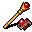

魅了のワンド Wand of charming
英語版 CrawlWiki の記事「Wand of charming」(0.31 向け、2026-01-17 版)の翻訳です。原文の著者は編集履歴をご覧ください。
この記事は 0.31 の時点の内容で、最新の 0.34 とは違うところがあるかもしれません。
| 種類 | ワンド |
|---|---|
| 名前 | 魅了のワンド |
| アイコン |  |

| 生き物を、短い間だけだが熱烈に使用者に忠実にさせる魔法の道具だ。 |
魅了のワンドは、生き物を魅了しようと試みる。成否は対象の意志力で判定される。成功すると、対象は短い間味方になる。召喚したモンスターと違って、魅了したモンスターは味方のまま階段を上り下りしてついてくる。また、ほとんどの種類の仲間と違って、視界の外にいても攻撃できる。
プレイヤーに向けて使った場合は、魅了の代わりに混乱を起こす。
このワンドは金縛りのワンドと入れ替わりで出る。1 回のゲームではどちらか一方しか出てこない。
戦略
このワンドの使い道は単純だ。
- 群れの中でいちばん大きなモンスターを魅了し、周りのモンスターを片づけさせる。序盤には意志力の高い敵はいないので、まず最も強いモンスターを魅了してみよう。たとえばオークの戦士に当てて、オークの群れを倒させてから、手負いになったオークの戦士と一対一で戦えばよい(味方のモンスターに近接攻撃するには v か Ctrl-方向キーを使う)。
- 特定のモンスターに攻撃させないようにする。魅了したモンスターはこちらを攻撃しなくなり、ほかのモンスターがそのマスに入るのを防ぎ、しかもダメージまで与えてくれる。通路なら、魅了した生き物が数ターンのあいだ通せんぼをしてくれる。殺人蜂や大喰い蜘蛛のような、意志力の低い群れの敵に対処するのにうってつけだ。
先へ進むにつれて、手ごわい生き物ほど意志力が高くなっていく。それでも終盤でさえ、殺人トウモロコシやヘリオンのような「支援役」のモンスターは意志力が低いことが多い(このワンドの格好の的だ)。脆弱の巻物など、意志力を下げる手段も助けになる。
小技
- 派生アンデッドのモンスターを魅了すると、効果が切れるまで敵対しない。近くに新しい仲間と戦うほかの敵がいなければ、魅了したモンスターを倒れるまで殴っても安全で、敵に戻ることもない。
- 厄介なモンスターを追い払いたければ、魅了してから命令(t)で退却(r)させればよい。今いる階で自由に動きたいなら、そのモンスターを連れて階段を上り下りし、退却を命じてから、もう一度階段を使えばよい。
- D&D に慣れた人は注意してほしい。あちらと違って、Crawl の魅了の効果はアンデッドや、ジェリーのような「心を持たない」モンスターにも効く。
変更履歴
- 0.29 より前は、このワンドは金縛りのワンドと入れ替わりではなかった。
- 0.27 より前は、このワンドは隷属のワンド(wand of enslavement)という名前だった。
- 0.19 より前は、信仰する神が嫌う敵を隷属させることはできなかった。たとえばトログの信者は呪文の使い手を隷属させられなかった。
- 0.15 より前は、モンスターはこのワンドを使えなかった(ただし、プレイヤーがこれで自分を混乱させることはできた)。
| ワンド |
|---|
| 強酸 / 光 / 水銀 • 吹雪 / 根縛り / 歪曲 • 魅了 / 金縛り 掘削 • 火炎 • 精神破壊 • 変化 |